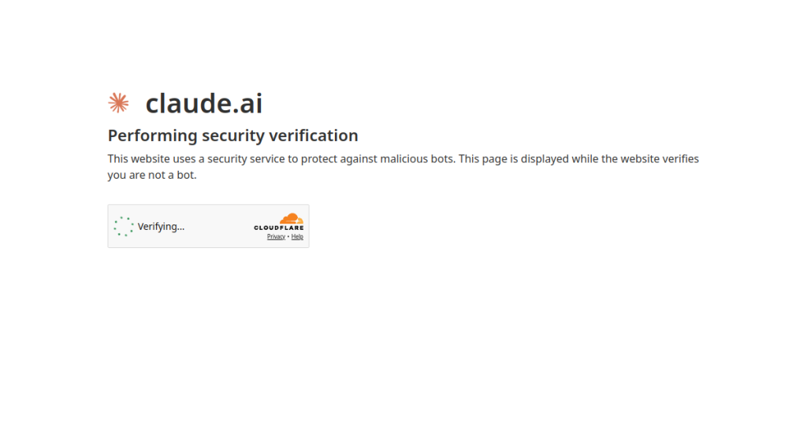

🔥 اگه هنوز داری فقط با چتجیپیتی کار میکنی، نصف قدرت هوش مصنوعی رو از دست دادی!
سلام رفقا! کلود یکی از خفنترین غولهای هوش مصنوعی دنیاست که توی تحلیل متن و برنامهنویسی شاهکار میکنه.
امروز قراره توی ۵ دقیقه با هم راهش بیندازیم تا تو هم مثل یک حرفهای ازش استفاده کنی.
۱. ورود و ثبتنام: وارد وبسایت Claude بشید و با حساب گوگل خیلی سریع ثبتنام کنید.
۲. تغییر آیپی: برای دسترسی اولیه، حتماً ابزار تغییر آیپی رو روشن کنید تا محدودیتی نداشته باشید.
۳. انتخاب مدل رایگان: مدل Claude 3.5 Sonnet کاملاً رایگانه و از نظر هوش حتی از مدلهای پولی هم قویتره.
۴. آپلود مستقیم فایل: میتونید فایلهای پیدیاف و عکس رو مستقیماً بفرستید تا براتون خلاصه یا تحلیل کنه.
۵. پرامپتنویسی دقیق: برای دریافت نتیجه عالی، نقش و لحن پاسخ رو شفاف مشخص کنید.
💡 نکته طلایی: بزرگترین نقطه قوت کلود فهم عمیق متون طولانی و کدنویسی هست، پس پروژههای سنگینت رو بسپار بهش!
📌 هر جا گیر کردی توی کامنتها بپرس تا با هم حلش کنیم!
💎 پک کامل پرامپتها رو از دکمههای پایین بگیر!
🚀 عضویت در کانال AIچی